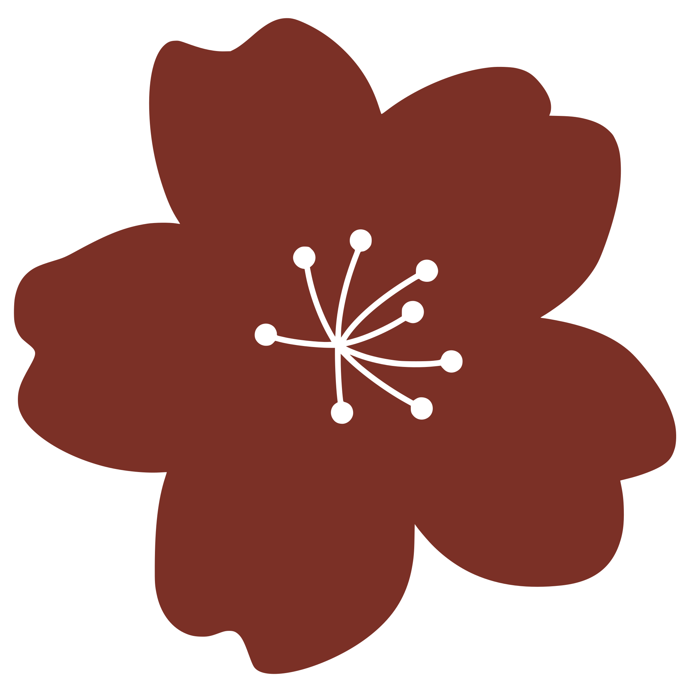
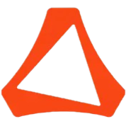
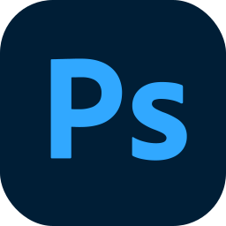
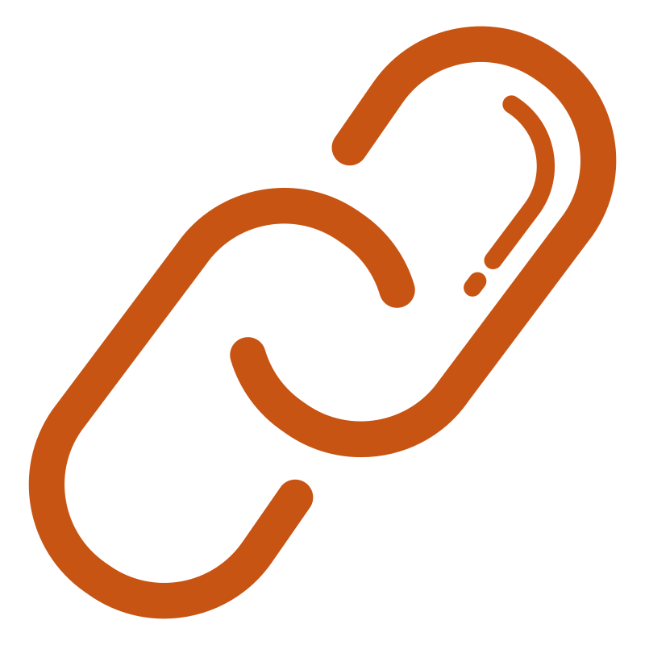
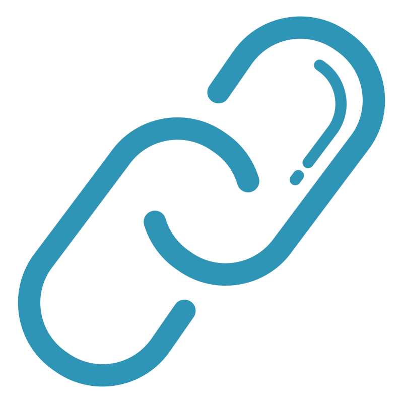
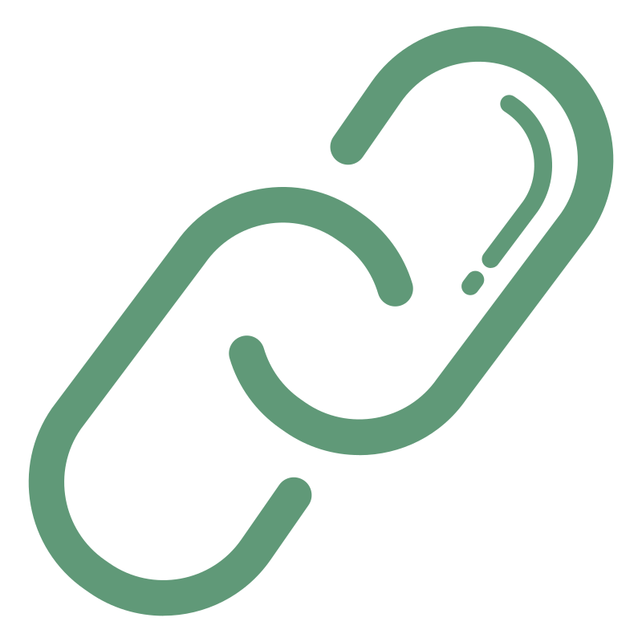

Julia Akemi Mullis
Estudante de Ciência de Dados e Negócios (ESPM)
01
Sobre Mim

Olá, sou a Akemi!
Durante cinco anos, estive profundamente envolvida no universo dos jogos, construindo minha marca pessoal, 'cute', e tendo a honra de me tornar a primeira mulher a competir profissionalmente em um campeonato de League of Legends no Brasil.
Também atuei como criadora de conteúdo em um projeto voltado para o público feminino, chamado Garotas Mágicas, e em uma das organizações de esports mais renomadas do país, a FURIA.
Atualmente, inicio uma nova fase em minha trajetória profissional. Sou estudante do 3º semestre de Ciência de Dados e Negócios (ESPM) e estou aberta a explorar diferentes áreas do curso, embora, neste momento, meu maior interesse seja a área de Engenharia e Ciência de Dados.
02
Skills
Human Skills
 Comunicação
Tendo experiência com o público, prezo pela clareza e pelo ajuste da abordagem conforme a necessidade do contexto.
Proatividade
Agir de forma autônoma é essencial, por isso resolvo os problemas sem esperar por suas solicitações.
Comprometimento
Ao aceitar uma tarefa, tenho como objetivo realizá-la com dedicação e no prazo estabelecido.
Colaboração multidisciplinar
Trabalhando na FURIA, adquiri a habilidade de colaborar efetivamente com profissionais de diferentes áreas e cargos.
Resolução de problemas
Como representante de sala, desenvolvi habilidades de análise e decisão, garantindo soluções justas para todas as partes envolvidas.
Hard Skills
-
Python
- 9 meses
-
MySQL
- 5 meses
-
 R
R
- 2 meses
-
 Git
Git
- 6 meses
-

JavaScript
- 3 meses
-
 Power BI
Power BI
- 3 meses
-

Altair AI Studio
- 3 meses
-
 Java
Java
- 2 meses
-
Tableau
- 3 meses
-
 PySpark
PySpark
- 3 meses
-
 HTML
HTML
- 6 meses
-
CSS
- 6 meses
-
Excel
- 6 meses
-

Photoshop
-  1 ano
03
Projetos
FarmerLink
"FarmerLink" é uma feira online que conecta pequenos fazendeiros a consumidores com estilo de vida sustentável, permitindo que conheçam a origem dos produtos, entrem em contato direto com os produtores e apoiem a cultura local.
Repositório no GitHub
- Node.js
- Express
- TypeScript
- EJS
- MySQL
Controle Hotel Pet
"Controle Hotel Pet" é um sistema desenvolvido para gerenciar as operações de um hotel para pets, abrangendo funcionalidades como cadastro, edição, consulta, listagem e hospedagem de animais, com integração a um banco de dados.
Repositório no GitHub
- Python
- SQLAlchemy
- MySQL
- Enum
ExpressLine
"ExpressLine" é um sistema para modelar conexões diretas entre cidades com Listas Duplamente Encadeadas (DDL) genéricas. Permite cadastrar cidades e ligações, calcular tempo de entrega e buscar rotas por tempo limite, com interface gráfica e API interna para manipulação e consulta dos dados.
Repositório no GitHub
- Java
- JOptionPane
- DLL
- API própria
04
Trajetória
Formação Acadêmica
De fev. 2024 - Previsão para dez. 2027
Bacharelado em Ciência de Dados e Negócios - Sistemas de
Informação
Escola Superior de Propaganda e Marketing – ESPM SP
Experiência Profissional
De dez. 2017 - dez. 2022
cute
Entrevista Ignis Cup
Marca Pessoal de Criação de Conteúdo
De jan. 2021 - nov. 2022
Garotas Mágicas
Grupo
Feminino de Criação de Conteúdo

De nov. 2020 - jul. 2022
FURIA
Criadora de
Conteúdo de Equipe de Esports
De dez. 2017 - mai. 2018
CNB Esports Club
Notícia ESPN
Jogadora Profissional
Atividade Adicional
De Ago. 2016 - jan. 2017
Decatur Central Hawks High School
Programa de Intercâmbio nos Estados Unidos
Experiência Acadêmica
De ago. 2024 - Até o momento
Martech ESPM
Treinamento de Data Analytics
De fev. 2023 - jun. 2024
Comunicação Social - Publicidade e Propaganda
Escola Superior de Propaganda e Marketing – ESPM SP
De fev. 2024 - jun. 2024
Ícone ESPM
Consultora
de Branding
De mar. 2023 - jun. 2023
Hub Arenas ESPM
Técnicas de pitch e storytelling
De fev. 2019 - dez. 2019
Fonoaudiologia
Pontifícia Universidade Católica de São Paulo – PUC-SP
Idiomas
Português
Fluente
Inglês
B2
05
Contato
Foi um prazer compartilhar minha história com você!
Meus
contatos estão à sua disposição.